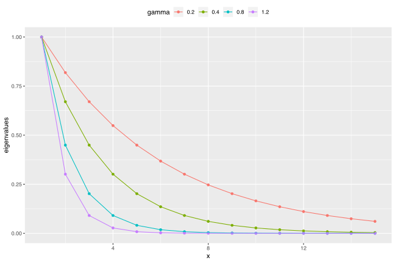
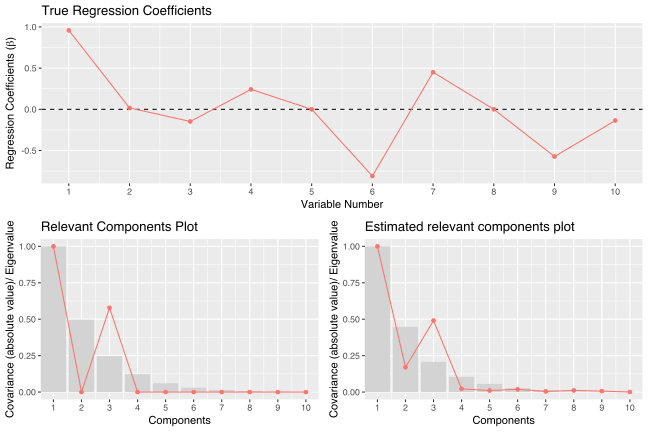
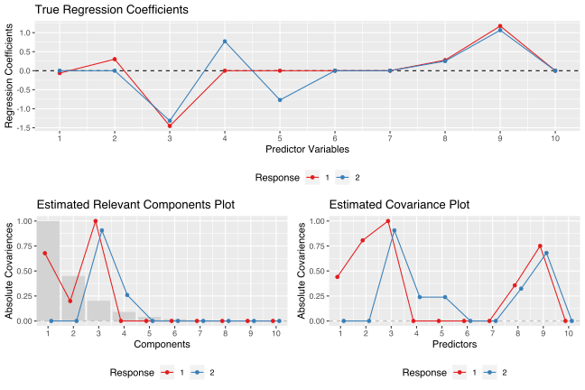
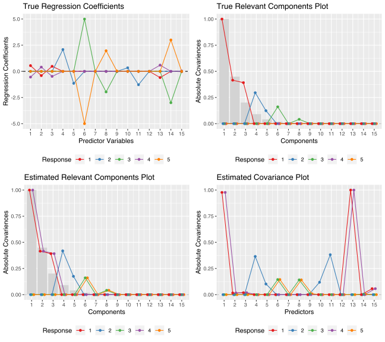

Introduction
Simrel r-package is a versatile tool for simulation of multivariate linear model data. The package consist of four core functions – unisimrel, bisimrel, multisimrel and simrel for simulation. It also has two more functions – one for plotting covariance and rotation matrices and another for plotting different properties of simulated data. As the name suggests, unisimrel function is used for simulating univariate linear model data, bisimrel simulates bivariate linear model data where user can specify the correlation between two responses with and without given X. In addition, this function allows users to get responses (y) having common relevant components.
An extension of bisimrel and unisimrel is multisimrel, by which user can simulate multivariate linear model data with multiple responses. In this simulation, each response must have exclusive set of predictors and relevant predictors components. Following examples will give a clear picture of these functions. The forth simulation function simrel wraps around these function and calls them according to what type of data a user is simulating. Following section discusses about the arguments required for each of these simulation function.
Simulation Parameters
A tool for simulating linear model data with single response discussed in sæbø et.al. (2015) and multi-response discussed in rimal et.al. (2018) is the basis for these functions. The function require following arguments which are also parameters for the simulation.
n: Number of training samples (n)
An integer for number of training samples. For example: n = 1000 simulates 1000 training observations.
p: Number of predictor variables (p)
An integer for number of predictor variables. p = 150 gives data with 150 predictor variables.
q: Number of relevant predictors (q)
An integer for the number of predictor variables that are relevant for the response. For example: q = 15 results 15 predictors out of p relevant for the response.
relpos: Position of relevant components
A vector of position index of relevant principal components of x. For instance, relpos = c(1, 2, 3, 5) will give data with 4 relevant components at position 1, 2, 3 and 5.
R2: Coefficient of determination
A decimal value between 0 and 1 specifying the coefficient of determination. Input of R2 = 0.8 gives data with 0.8 coefficient of determination.
gamma: Decay factor for exponential decay of eigenvalues of predictor variables
A numeric value greater than 0. It is a factor controlling exponential decay of eigenvalues of predictor variables. For p predictors, the eigenvalues are computed as exp(-gamma(i-1)) for i=1, 2, …, p so that, higher the value of gamma steeper will be the decay of eigenvalues. Since steeper eigenvalues corresponds to high multicollinearity in data, gamma also controls the multicollinearity present in the simulated data.

eta: Decay factor for exponential decay of eigenvalues of response variables
Similar to gamma, it is a factor controlling exponential decay of eigenvalues of response variables. For m responses, the eigenvalues are computed as exp(-eta(j-1)) for j=1, 2, …, m so that, higher the value of eta steeper will be the decay of eigenvalues.
m:Number of Response Variables (Only applicable for Univariate Simulation)
An integer specifying the number of response variables to simulate. This is only applicable in Multivariate Simulation (multisimrel).
ypos:Position of response components indices to combine together
The true dimension of response matrix containing the information can be smaller than the dimension that is defined by all the response variables. Lets suppose for an example that only two response components actually contains information that the predictor (or a subset of predictor) can explain. However, In the simulation data user might want 5 response variables that contains the same inforamtion contained in two latent component of the respone variables. The ypos parameters if specified as list(c(1, 3), c(2, 4, 5)) will mix up the inforamtion in response component 1 with uninformative component 3 so that the response variable 1 and 3 contains the same information that was contained in response component 1. A similar description can be made for the second response component which is mixed with non-informative response components 4 and 5.
rho:Correlation between two response variables (Only applicable for Bivariate Simulation
A vector of two numbers specifying the correlation between the the two response variable in bivariate simulation. The first number is for the correlation without the knownledge of predictors while the second number is for the correlation given the predictors. These values should be between the range of a correlation, i.e. -1 to 1.
Installation
The package is now available in CRAN and can be installed using install.packages as,
install.packages("simrel")A more recent stable version can be download from GitHub as,
# install.pacakges("devtools")
devtools::install_github("simulatr/simrel")
devtools::install_bitbucket("simulatr/simrel")Examples
Univariate Simulation:
Simulate a univariate linear model data with 100 training samples and 500 test samples having 10 predictors (X) where only 8 of them are relevant for the variation in the response vector. The population model should explain 80% of the variation present in the response. In addition, only 1st and 3rd principal components of X should be relevant for y and the eigenvalues of X decreases exponentially by a factor of 0.7.
library(simrel)
sim_obj <-
simrel(
n = 100, # 100 training samples
p = 10, # 10 predictor variables
q = 8, # only 8 of them are relevant
R2 = 0.8, # 80% of variation is explained by the model
relpos = c(1, 3), # First and third principal components are relevant
gamma = 0.7, # decay factor of eigenvalue of X is 7
ntest = 500, # 500 Test observations
type = "univariate" # Univariate linear model data simulation
)Here sim_obj is a object with class simrel and constitue of a list of simulated linear model data along with other relevant properties. Lets use plot function to overview the situation,
plot_simrel(sim_obj, which = c(1, 2, 4),
layout = matrix(c(1, 1, 2, 3), 2, 2, byrow = TRUE))
Bivariate Simulation
The wrapper function simrel uses bisimrel for simulating bivariate linear model data. Lets consider a situation to simulate data from bivariate distribution with 100 training and 500 test samples. The response vectors y1 and y2 have correlation of 0.8 without given X and 0.6 with given X. Among 10 total predictor variables, 5 are relevant for y1 and 5 are relevant for y2. However 3 of them are relevant for both of them. Let the predictors explain 80% and 70% of total variation present in population of y1 and y2 respectively. In addition, let 1, 2 and 3 components are relevant for y1 and 3 and 4 components are relevant for y2. In this case, the third component is relevant for both responses. Let the decay factor of eigenvalues of X be 0.8.
simrel2_obj <-
simrel(
n = 100, # 100 training samples
p = 10, # 10 predictor variables
q = c(5, 5, 3), # relevant variables for y1 and y2
relpos = list(c(1, 2, 3), c(3, 4)), # relevant components for y1 and y2
R2 = c(0.8, 0.7), # Coefficient of variation for y1 and y2
rho = c(0.8, 0.6), # correlation between y1 and y2 with and without given X
gamma = 0.8, # decay factor of eigenvalues of X
ntest = 500, # 500 test samples
type = "bivariate"
)Lets look at the plot,
plot_simrel(simrel2_obj, which = c(1, 3, 4),
layout = matrix(c(1, 1, 2, 3), 2, 2, byrow = TRUE))
Multivariate Simulation
Multivariate simulation uses multisimrel function and can simulate multiple responses. Lets simulate 100 training samples and 500 test samples. The simulated data has 5 responses and 15 predictors. These 5 responses spans 5 latent space out of which only 3 are related to the predictors. Lets denote them by wi. Let 5, 4 and 4 predictors are relevant for response components w1, w1 and w1 respectively. The position of relevant predictor components for w1 be 1, 2, 3; for w2 be 4 and 5. Similarly, predictor components 6 and 8 are relevant for w3.
Since we need 5 response variables, we mix-up these 3 informative response components with 2 remaining uninformative components so that all simulated response contains information that X are related. Lets combine w1 with w4 and w3 with w5. So that the predictors that are relevant for response components w1 will be relevant for response y1 and y3 and so on.
In addition to these latent space requirements, let X explains 80% variation present in w1, 50% in w2 and 70% in w3. The eigenvalues of X reduces by the factor of 0.8.
simrel_m_obj <-
simrel(
n = 100, # 100 training samples
p = 15, # 15 predictor variables
q = c(5, 4, 4), # relevant variables for w1, w2 and w3
relpos = list(c(1, 2, 3), c(4, 5), c(6, 8)), # relevant components for w1, w2 and y3
R2 = c(0.8, 0.5, 0.7), # Coefficient of variation for w1, w2 and y3
ypos = list(c(1, 4), c(2), c(3, 5)), # combining response components together
m = 5, # Number of response
gamma = 0.8, # decay factor of eigenvalues of X
ntest = 500, # 500 test samples
type = "multivariate" # multivariate simulation
)Lets look at the simrel plot;
plot_simrel(simrel_m_obj, which = 1:4,
layout = matrix(1:4, 2, 2, byrow = TRUE))
RStudio Addins
To make the process easier to use, we have created a shiny gadget as an rstudio addons. If you are using Rstuio, you can access this app from Tools > Addins > simulatr. But you can also access this app using simrel::app_simulatr(). This will open the app in a browser from where you can choose all your parameter, see the true population parametrs you will get from the simulation. When the app is closed, it will give an command output on your R console.

App-Simulatr-Screenshot
References
- Sæbø, S., Almøy, T., & Helland, I. S. (2015). simrel—A versatile tool for linear model data simulation based on the concept of a relevant subspace and relevant predictors. Chemometrics and Intelligent Laboratory Systems, 146, 128-135.
- Rimal, R., Almøy, T., & Sæbø, S. (2018). A tool for simulating multi-response linear model data. Chemometrics and Intelligent Laboratory Systems, 176, 1-10.